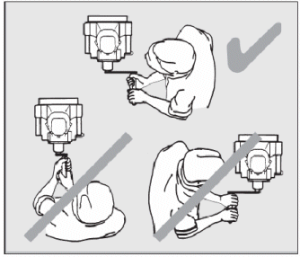
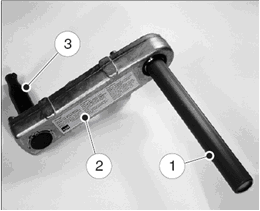

Dieses Merkblatt gibt Hinweise zum sicheren Starten von Dieselmotoren mit rückschlagdämpfender Handandrehkurbel – nachfolgend Sicherheitskurbel genannt.
Nur die beschriebenen Sicherheitskurbeln dürfen zum Starten verwendet werden.
Das Merkblatt wurde vom Fachausschuss Tiefbau des DGUV erstellt.

Quelle: Hatz
Merkregeln
- Betriebsanleitung des Motorenherstellers beachten.
- Geeignete Motorenöle in Abhängigkeit von der Umgebungstemperatur und der Jahreszeit wählen (s. Herstellerangaben).
- Nur zum Motor passende Sicherheitskurbel verwenden.

Quelle: Hatz
Bild 1 Sicherheitskurbel mit 1 Griffrohr, 2 Kurbelwange, 3 Andrehklaue
Sicherheitskurbel überprüfen, nicht mit abgenutzter oder verschmutzter Andrehklaue bzw. beschädigtem Griffrohr verwenden.
Mit einer beschädigten Andrehklaue ist der Kraftschluss zwischen Motor und Sicherheitskurbel nicht gewährleistet, wodurch Verletzungen durch Abrutschen der Kurbel die Folge sein können.
- Motor – wo möglich – durch Auskuppeln vom anzutreibenden Gerät trennen.
- Seitlich zum Motor stellen, dabei auf festen Stand achten.
Quelle: Hatz
Bild 2 Startposition bei linksdrehenden Motoren
(bei rechtsdrehenden Motoren Startposition links vom Motor)
Bei älteren kleineren Motoren ist aufgrund der Länge des Griffrohres das Starten nur mit einer Hand möglich. Hier die freie Hand auf dem Gerät abstützen und damit auch das Gerät festhalten. Ansonsten grundsätzlich die Andrehkurbel beim Starten mit beiden Händen umfassen. Kleinere Motoren bis ca. 6 KW aus heutiger Produktion werden mit Reversierstartern ausgestattet.
Wo vorhanden, Dekompressionsautomatik aktivieren.
Andrehkurbel langsam drehen bis Andrehklaue am Motorblock einrastet.
Griffrohr der Sicherheitskurbel verdrehsicher mit beiden Händen fassen (Bild 2). Anfangs langsam und dann zunehmend schneller und dabei kraftvoll drehen, bis der Motor startet.
Der Kraftschluss zwischen Motor und Sicherheitskurbel muss durch verdrehsicheres Festhalten des Griffrohres (eine Hand im Obergriff und eine Hand im Untergriff) und zügiges Drehen gewährleistet sein und darf während des Startvorgangs nicht unterbrochen werden.
I. d. R. sind 5 Kurbelumdrehungen ohne Kompression durchzuführen bis der Motor automatisch komprimiert und zündet.
Bei Motoren ohne Dekompressionsautomatik sind Dekompression und Kompression (hier i. d. R. nach 10 Kurbelumdrehungen) beim Startvorgang manuell zu regeln.
Die Kurbelumdrehungen ohne Kompression erfolgen zum Verteilen und Erwärmen des Öls im Motorraum und gewährleisten damit ein leichteres Durchdrehen des Motors beim eigentlichen Startvorgang.
- Bei Motoren ohne Dekompressionsautomatik vor dem Startvorgang durch langsames Drehen den Kompressionspunkt suchen. Die Kurbel so einstecken, dass der Kompressionswiderstand beim Hochziehen der Kurbel (von unten nach oben zum Körper hin) auftritt. Unmittelbar danach ohne erneutes Loslassen der Kurbel den Startvorgang beginnen.
Da die Hand über Zug mehr Kraft übertragen kann als über Druck, kann derart die zum Starten des Motors notwendige Kompression leichter überwunden werden und das Risiko des Kurbelrückschlages minimiert werden.
Bei neueren Motoren ergibt sich der Kompressionspunkt automatisch beim Hochziehen der Kurbel.
- Tritt während des Startvorgangs, z.B. durch zaghaftes Andrehen, ein Rückdrehmoment (Rückschlag) auf, so wird aufgrund der kurzen Rückdrehung der Andrehmechanismus ausgeklinkt und damit die Sicherheitskurbel vom Motor getrennt. Danach die Sicherheitskurbel aus der Führungshülse herausziehen.
Zur Wiederholung des Startvorganges warten bis Motor stillsteht, erst danach Startvorbereitungen erneut durchführen.
- Sobald der Motor startet, wird die Andrehklaue automatisch entkoppelt und dabei um ca. 2 cm herausgeschoben. Anschließend die Sicherheitskurbel aus der Führungshülse herausziehen.
Solange der Motor läuft, ist ein wiederholtes Einkoppeln der Andrehklaue nicht möglich.
- Soll erforderlichenfalls der Startvorgang unterbrochen werden, Drehung der Kurbel verlangsamen, wodurch der Motor im Kompressionspunkt stehen bleibt und Kurbel gefahrlos herausgezogen werden kann.
Hinweise für den Start bei Kälte
Motor mit Sicherheitskurbel solange durchdrehen, bis er sich merklich leichter drehen lässt (i. d. R. nach 10 bis 20 Kurbelumdrehungen). Als Starthilfe nur dünnflüssige Schmieröle nach Angaben des Motorherstellers verwenden.
Niemals Starthilfesprays verwenden, wegen Rückschlaggefahr durch Frühzündung!
Achtung
Auch bei der Sicherheitskurbel ist ein Rückschlag möglich, der hier allerdings auf ca.15 Grad begrenzt ist. Diese kurze Rückdrehung wird als Auslöseweg benötigt, um über den Mechanismus die Verbindung Kurbelwange und Andrehklaue zu trennen. Deshalb wird diese Kurbel treffender als rückschlagdämpfende Handandrehkurbel bezeichnet.